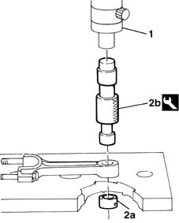
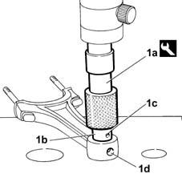
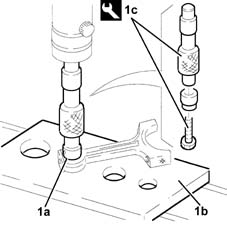
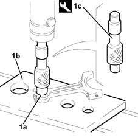
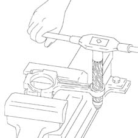

1028H58 connecting rod small end bush - replace
- Path
- Procedures > 10 ENGINE UNIT > 1028 PISTONS AND CONNECTING RODS > 1028H pistons and connecting rods > 1028H58 connecting rod small end bush - replace
- Kind
- repair procedure (removal / refitting; the operation number is the code)
- Applies to
- all engines; all production periods
- Interactive page
- https://sloeber94.github.io/elrnDB-fMltpl/en/#/2892347
Applies to: engines: 1.6 16v; all production periods
 Dismantling
Dismantling
 Reassembling
ReassemblingPosition the connecting rod under a suitable press.
1. Remove the small end bush using a suitable drift.
 | Name | Country |
|---|---|---|
1 | Drift | 1.860.054.000 |

Applies to: engines: 1.6 16v; all production periods
Reassembling
DismantlingCheck that the diameter of the small end is within the recommended limits or else the connecting rod has to be replaced.
 | Measurement | Value | |
|---|---|---|---|
- | Small end diameter (mm) | 23.939 - 23.972 |
Check the outer diameter of the new small end bush also making sure that the clearance between the bush and the small end is within the recommended values.
| Measurement | Value | |
|---|---|---|---|
- | Small end bush external diameter (mm) | 24.016 - 24.041 |
| Measurement | Value | |
|---|---|---|---|
- | Interference between small end bush and housing (mm) | 0.044 - 0.102 |
Position the connecting rod under a press again.
1. Using the drift (1a), fit the new bush (1b), taking care to ensure that the lubrication port (1c) in the bush coincides with the one (1d) in the connecting rod.

Applies to: engines: 1.6 16v; all production periods
Reface the bush fitted previously using a suitable reamer, making sure that internal diameter of the bush is within the maximum permissible vaule.
| Measurement | Value | |
|---|---|---|---|
- | Maximum permissible bush internal diameter after reaming (mm) | 22.004 - 22.009 |
Applies to: engines: 1.6 16v; all production periods; only with equipment: Euro 3
Reface the bush fitted previously using a suitable reamer, making sure that internal diameter of the bush is within the maximum permissible vaule.
| Measurement | Value | |
|---|---|---|---|
- | Maximum permissible bush internal diameter after reaming (mm) | 21.004÷21.009 |
Applies to: engines: 1.9 JTD 8V; all production periods
Dismantling
Reassembling1. Remove the bush (1a) from the small end using a hydraulic press, a suitable plate (1b) and the tool (1c) constructed as shown in the diagram.
| Name | Country |
|---|---|---|
1c | Tool for Extracting/Fitting | 1.860.821.001 |

Applies to: engines: 1.9 JTD 8V; all production periods
Reassembling
Dismantling1. Fit a new bush (1a) in the small end using a hydraulic press, a suitable plate (1b) and tool (1c) constructed as shown in the diagram.
| Name | Country |
|---|---|---|
1c | Tool for Extracting/Fitting | 1.860.821.001 |

Applies to: engines: 1.9 JTD 8V; all production periods
Ream the inner diameter of the small end bush so that it corresponds to the recommended values.
| Measurement | Value | |
|---|---|---|---|
- | Inner diameter (mm) | 26.006 - 26.012 |
